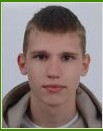

Twórca projektów studenckich – Vistula University
2025 – obecnie
Praca nad prototypami prostych gier oraz nauka logiki programowania obiektowego.

Numer indeksu: 77319
E-mail: launcher034@gmail.com
Telefon: +48 792 958 559
Miasto: Warszawa
Jestem studentem gamedevu na Akademii Finansów i Biznesu Vistula. Moim celem jest tworzenie angażujących gier i rozwijanie umiejętności programistycznych w środowiskach takich jak Unity lub Unreal Engine.
2025 – obecnie
Praca nad prototypami prostych gier oraz nauka logiki programowania obiektowego.
2024 – 2025
Analiza mechanik gier wideo oraz tworzenie dokumentacji projektowej (GDD).
Vistula University - Academy of Finance and Business (Warszawa, Polska)
Kierunek: Gamedev (Projektowanie gier)
Okres: 2025 – obecnie